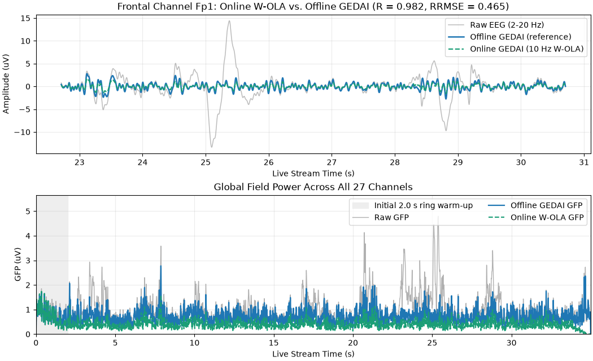
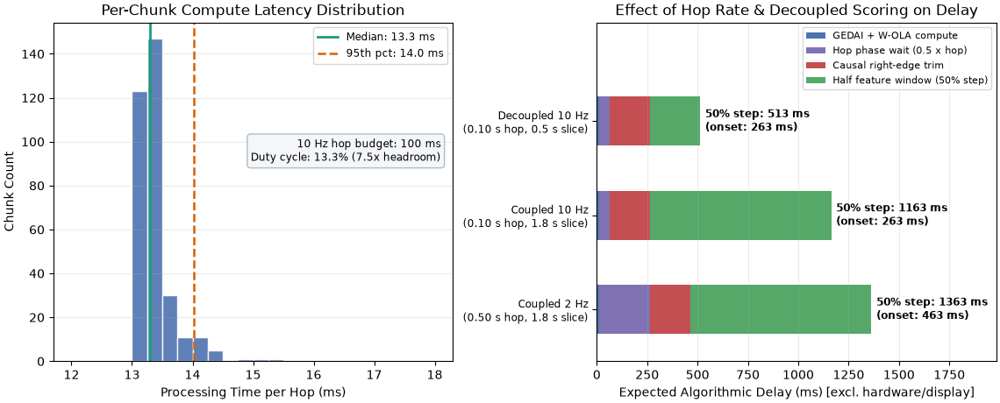

Note
Go to the end to download the full example code.
Using GEDAI for online (real-time) denoising🔗
This tutorial shows how to run MultibandGedai in a
real-time streaming pipeline (such as BCI or neurofeedback) with offline-grade
denoising and sub-second feedback responsiveness.
A production online workflow has four key stages:
Calibration without leakage: fit
MultibandGedaion a dedicated baseline recording (ideally augmented with a short prompted-artifact block) with automatic bad-channel exclusion enabled.Fast chunk transformation: call
transform_raw()withcompute_metrics=Falseto skip diagnostic ENOVA/SENSAI computation during live hops.Weighted Overlap-Add (W-OLA) + continuous bandpass: blend overlapping chunks in a rolling buffer before zero-phase filtering so chunk boundaries do not introduce FIR/wavelet edge transients.
Decoupled right-trimmed scoring: keep a
2.0 swindow for stable GEDAI denoising, trim only the live causal right edge (0.20 s), and extract downstream features from the stabilized slice (e.g.,0.50 s).
import time
import matplotlib.pyplot as plt
import mne
import numpy as np
from mne.io import RawArray, read_raw
from gedai import MultibandGedai
from gedai.data import get_contaminated_eeg_set_path
1. Load Sample EEG Data & Split Calibration vs. Live Stream🔗
We load the sample 60 s contaminated EEG recording (27 channels at
200 Hz) and split it chronologically into two non-overlapping parts:
0 - 25 s: offline baseline calibration segment.25 - 60 s: unseen data streamed chunk-by-chunk to simulate live acquisition.
raw = read_raw(str(get_contaminated_eeg_set_path()), preload=True, verbose=False)
raw_calib = raw.copy().crop(0.0, 25.0)
raw_live = raw.copy().crop(25.0, None)
# Apply average reference before calibration so the data matches GEDAI's
# internal average-referenced leadfield covariance.
raw_calib.set_eeg_reference("average", projection=False, verbose=False)
Tip
If your calibration recording contains pure eyes-closed or eyes-open rest
with almost no artifacts, append a short (10 - 15 s) prompted-artifact
block (eye blinks, saccades, jaw clench) solely when calling fit_raw.
This gives GEDAI clear non-brain eigenvalues to separate, while keeping
clean resting data separate for downstream feature baseline normalization.
2. Calibrate Multiband GEDAI with Bad-Channel Protection🔗
We fit MultibandGedai with broadband_pass=True
using 2.0 s epochs. Keeping a 2.0 s denoising context preserves
low-frequency spatial covariance estimation and keeps MODWT boundary padding
small, even when downstream feedback updates much faster (for example, at
10 Hz).
Setting on_bad_channel="exclude" and bad_channel_threshold="auto"
detects corrupted channels during calibration and excludes them before
average referencing and GEDAI spatial projection.
gedai = MultibandGedai(
wavelet_type="haar",
wavelet_level="auto",
broadband_pass=True,
)
gedai.fit_raw(
raw_calib,
duration=2.0,
overlap=0.75,
wavelet_low_cutoff=2.0,
on_bad_channel="exclude",
bad_channel_threshold="auto",
n_jobs=1,
verbose=False,
)
print(
f"Fitted {gedai.__class__.__name__} (engine={gedai.engine!r}, "
f"detected bad channels={gedai.bad_channels_})"
)
Fitted MultibandGedai (engine='numpy', detected bad channels=[])
3. Stateful Live W-OLA Processor with Decoupled Scoring Slice🔗
Transforming isolated overlapping windows independently and keeping only the
raw chunk edge leaves FIR/MODWT boundary transients on the newest samples.
Instead, OnlineGedaiProcessor runs:
NumPy average re-referencing restricted to good channels only.
transform_raw()withcompute_metrics=Falseandinterpolate_bads=True(if sensor coordinates are present and bad channels were excluded).Hanning Weighted Overlap-Add (W-OLA) into a rolling
4.0 shistory buffer followed by continuous zero-phase bandpass filtering (2 - 20 Hz).Extraction of the stabilized slice
[t - edge_trim_sec - score_window_sec, t - edge_trim_sec].
class OnlineGedaiProcessor:
"""Stateful chunk processor for real-time GEDAI denoising and W-OLA filtering.
Parameters
----------
model : gedai.MultibandGedai
Fitted multiband GEDAI instance.
info : mne.Info
Sensor metadata matching incoming chunks.
window_sec : float
Sliding denoising window duration in seconds.
history_sec : float
Rolling W-OLA ring history used for continuous filtering.
edge_trim_sec : float
Causal right-edge trim in seconds excluded from downstream scoring.
score_window_sec : float | None
Duration in seconds extracted immediately before ``-edge_trim_sec`` for
low-latency feature computation. If ``None``, returns all samples up to
``-edge_trim_sec``.
l_freq : float | None
Lower bandpass cutoff in Hz applied to the blended W-OLA buffer.
h_freq : float | None
Upper bandpass cutoff in Hz applied to the blended W-OLA buffer.
"""
def __init__(
self,
model: MultibandGedai,
info: mne.Info,
window_sec: float = 2.0,
history_sec: float = 4.0,
edge_trim_sec: float = 0.20,
score_window_sec: float | None = 0.50,
l_freq: float | None = 2.0,
h_freq: float | None = 20.0,
):
self.model = model
self.sfreq = float(info["sfreq"])
self.ch_names = list(info["ch_names"])
self.bad_channels = list(getattr(model, "bad_channels_", []))
self.good_mask = np.array(
[ch not in self.bad_channels for ch in self.ch_names],
dtype=bool,
)
self.base_info = info.copy()
self.base_info["bads"] = list(self.bad_channels)
has_locs = all(
np.isfinite(ch["loc"][:3]).all() and np.linalg.norm(ch["loc"][:3]) > 0
for ch in self.base_info["chs"]
)
self.use_interp = bool(self.bad_channels and has_locs)
self.window_samples = int(round(window_sec * self.sfreq))
hist_dur = max(history_sec, 2.0 * window_sec)
self.history_samples = int(round(hist_dur * self.sfreq))
self.cap_samples = 2 * self.history_samples
self.trim_samples = int(round(edge_trim_sec * self.sfreq))
self.score_samples = (
None
if score_window_sec is None
else max(1, int(round(score_window_sec * self.sfreq)))
)
self.l_freq = l_freq
self.h_freq = h_freq
n_out = len(self.ch_names)
self._num = np.zeros((n_out, self.cap_samples), dtype=np.float64)
self._den = np.zeros(self.cap_samples, dtype=np.float64)
self._head_sample: int | None = None
self._hanning = np.clip(np.hanning(self.window_samples), 1e-3, 1.0)
def process_chunk(
self, chunk_data: np.ndarray, start_sample: int
) -> tuple[np.ndarray, np.ndarray]:
"""Denoise one chunk, blend via W-OLA, filter, and slice for scoring.
Parameters
----------
chunk_data : ndarray, shape (n_channels, n_samples)
Raw EEG window ending at the current acquisition sample.
start_sample : int
Sample index of ``chunk_data[:, 0]`` on the live stream timeline.
Returns
-------
filtered_chunk : ndarray, shape (n_channels, n_samples)
Continuously blended and filtered window for the current chunk.
score_slice : ndarray, shape (n_channels, n_score_samples)
Right-trimmed interior window ready for real-time feature scoring.
"""
data_2d = np.array(chunk_data, dtype=np.float64, copy=True)
if np.any(self.good_mask):
data_2d[self.good_mask] -= data_2d[self.good_mask].mean(
axis=0, keepdims=True
)
raw_chunk = RawArray(data_2d, self.base_info.copy(), verbose=False)
clean_raw = self.model.transform_raw(
raw_chunk,
n_jobs=1,
verbose=False,
interpolate_bads=self.use_interp,
compute_metrics=False,
)
clean_bb = clean_raw.get_data()
n_samples = clean_bb.shape[1]
if clean_bb.shape[0] != self._num.shape[0]:
self._num = np.zeros(
(clean_bb.shape[0], self.cap_samples), dtype=np.float64
)
self._den.fill(0.0)
self._head_sample = None
if self._head_sample is None or start_sample < self._head_sample:
self._num.fill(0.0)
self._den.fill(0.0)
self._head_sample = start_sample
end_sample = start_sample + n_samples
excess = (end_sample - self._head_sample) - self.cap_samples
if excess > 0:
if excess >= self.cap_samples:
self._num.fill(0.0)
self._den.fill(0.0)
else:
self._num[:, :-excess] = self._num[:, excess:]
self._num[:, -excess:] = 0.0
self._den[:-excess] = self._den[excess:]
self._den[-excess:] = 0.0
self._head_sample += excess
loc_start = start_sample - self._head_sample
loc_end = end_sample - self._head_sample
win = (
self._hanning
if n_samples == self.window_samples
else np.clip(np.hanning(n_samples), 1e-3, 1.0)
)
self._num[:, loc_start:loc_end] += clean_bb * win
self._den[loc_start:loc_end] += win
ctx_start = max(0, loc_end - self.history_samples)
valid_idx = np.flatnonzero(self._den[ctx_start:loc_end] > 1e-6)
if valid_idx.size > 0 and valid_idx[0] > 0:
ctx_start += int(valid_idx[0])
wola_bb = self._num[:, ctx_start:loc_end].copy()
den_slice = self._den[ctx_start:loc_end]
mask = den_slice > 1e-6
wola_bb[:, mask] /= den_slice[mask]
if self.l_freq is not None or self.h_freq is not None:
wola_filt = mne.filter.filter_data(
wola_bb, self.sfreq, self.l_freq, self.h_freq, verbose=False
)
else:
wola_filt = wola_bb
filtered_chunk = wola_filt[:, -n_samples:]
score_end = (
n_samples - self.trim_samples
if self.trim_samples > 0 and n_samples > self.trim_samples + 10
else n_samples
)
score_start = (
max(0, score_end - self.score_samples)
if self.score_samples is not None
else 0
)
return filtered_chunk, filtered_chunk[:, score_start:score_end]
4. Simulate a 10 Hz Live Stream & Profile Per-Hop Compute Latency🔗
We stream the unseen 35 s recording using window_sec = 2.0 and
hop_sec = 0.10 (95 % overlap, 10 Hz feedback rate). Notice we
exclude the first warm-up hop when summarizing steady-state compute latency,
and accumulate the live output timeline to verify fidelity against offline
transform_raw().
sfreq = float(raw_live.info["sfreq"])
live_data = raw_live.get_data()
window_sec = 2.0
hop_sec = 0.10
edge_trim_sec = 0.20
score_window_sec = 0.50
window_samples = int(round(window_sec * sfreq))
hop_samples = int(round(hop_sec * sfreq))
n_live_samples = live_data.shape[1]
processor = OnlineGedaiProcessor(
model=gedai,
info=raw_live.info,
window_sec=window_sec,
history_sec=4.0,
edge_trim_sec=edge_trim_sec,
score_window_sec=score_window_sec,
l_freq=2.0,
h_freq=20.0,
)
hop_latencies_ms = []
online_accum = np.zeros_like(live_data)
online_weights = np.zeros(n_live_samples, dtype=np.float64)
stitch_win = np.clip(np.hanning(window_samples), 1e-3, 1.0)
start_positions = range(0, n_live_samples - window_samples + 1, hop_samples)
for step_idx, start_samp in enumerate(start_positions):
chunk = live_data[:, start_samp : start_samp + window_samples]
t0 = time.perf_counter()
filtered_chunk, score_slice = processor.process_chunk(chunk, start_samp)
dt_ms = (time.perf_counter() - t0) * 1000.0
# Skip the very first warm-up chunk in steady-state timing statistics.
if step_idx >= 1:
hop_latencies_ms.append(dt_ms)
# Reconstruct the continuous online timeline from the delivered chunks.
online_accum[:, start_samp : start_samp + window_samples] += (
filtered_chunk * stitch_win
)
online_weights[start_samp : start_samp + window_samples] += stitch_win
online_continuous = online_accum.copy()
valid_w = online_weights > 1e-6
online_continuous[:, valid_w] /= online_weights[valid_w]
lat_arr = np.asarray(hop_latencies_ms)
hop_budget_ms = hop_sec * 1000.0
med_lat = float(np.median(lat_arr))
p95_lat = float(np.percentile(lat_arr, 95))
max_lat = float(np.max(lat_arr))
print(
f"Processed {len(lat_arr) + 1} live chunks "
f"({score_slice.shape[1] / sfreq:.2f} s scored slice per hop):"
)
duty_pct = 100.0 * med_lat / hop_budget_ms
print(
f" Compute latency -> median: {med_lat:.2f} ms | "
f"p95: {p95_lat:.2f} ms | max: {max_lat:.2f} ms "
f"(duty cycle: {duty_pct:.1f}% of {hop_budget_ms:.0f} ms hop)"
)
Processed 331 live chunks (0.50 s scored slice per hop):
Compute latency -> median: 13.30 ms | p95: 14.02 ms | max: 15.45 ms (duty cycle: 13.3% of 100 ms hop)
5. Validate Online W-OLA Against Full Offline GEDAI🔗
Next, we run standard offline GEDAI across the same 35 s recording and
compare both time-series waveforms and Global Field Power (GFP). Evaluating
after the initial 2.0 s ring warm-up and before the 0.20 s trailing
boundary verifies how closely streaming W-OLA matches full offline denoising.
raw_live_ref = raw_live.copy().set_eeg_reference(
"average", projection=False, verbose=False
)
raw_live_bp = raw_live_ref.copy().filter(2.0, 20.0, verbose=False).get_data()
offline_clean = gedai.transform_raw(raw_live_ref.copy(), n_jobs=1, verbose=False)
offline_bp = offline_clean.filter(2.0, 20.0, verbose=False).get_data()
eval_start = int(round(2.0 * sfreq))
eval_end = n_live_samples - int(round(edge_trim_sec * sfreq))
on_eval = online_continuous[:, eval_start:eval_end]
off_eval = offline_bp[:, eval_start:eval_end]
r_online_offline = float(np.corrcoef(on_eval.ravel(), off_eval.ravel())[0, 1])
rrmse = float(
np.sqrt(np.mean((on_eval - off_eval) ** 2))
/ max(np.sqrt(np.mean(off_eval**2)), 1e-15)
)
print(
f"Online W-OLA vs. Offline GEDAI fidelity (interior): "
f"R = {r_online_offline:.4f}, RRMSE = {rrmse:.4f}"
)
Online W-OLA vs. Offline GEDAI fidelity (interior): R = 0.9821, RRMSE = 0.4655
We plot an 8 s window centered on strong frontal artifact activity on
channel Fp1 (top) alongside the Global Field Power across all channels
over the full live stream (bottom).
times_live = np.arange(n_live_samples) / sfreq
fp1_idx = raw_live.ch_names.index("Fp1")
# Pick the 8 s interior segment with highest raw Fp1 peak amplitude for display.
seg_len = int(round(8.0 * sfreq))
search_end = max(eval_start + 1, eval_end - seg_len)
best_start = max(
eval_start,
int(np.argmax(np.abs(raw_live_bp[fp1_idx, eval_start:search_end])))
+ eval_start
- seg_len // 3,
)
best_start = min(best_start, eval_end - seg_len)
seg_sl = slice(best_start, best_start + seg_len)
t_seg = times_live[seg_sl]
fig1, axes1 = plt.subplots(2, 1, figsize=(10.5, 6.4), constrained_layout=True)
ax = axes1[0]
ax.plot(
t_seg,
raw_live_bp[fp1_idx, seg_sl] * 1e6,
color="#b0b0b0",
linewidth=1.1,
alpha=0.85,
label="Raw EEG (2-20 Hz)",
)
ax.plot(
t_seg,
offline_bp[fp1_idx, seg_sl] * 1e6,
color="#1f77b4",
linewidth=1.8,
label="Offline GEDAI (reference)",
)
ax.plot(
t_seg,
online_continuous[fp1_idx, seg_sl] * 1e6,
color="#1b9e77",
linestyle="--",
linewidth=1.6,
label="Online GEDAI (10 Hz W-OLA)",
)
ax.set_title(
f"Frontal Channel Fp1: Online W-OLA vs. Offline GEDAI "
f"(R = {r_online_offline:.3f}, RRMSE = {rrmse:.3f})"
)
ax.set_xlabel("Live Stream Time (s)")
ax.set_ylabel("Amplitude (uV)")
ax.legend(loc="upper right", frameon=True)
ax.grid(alpha=0.25)
gfp_raw = np.std(raw_live_bp, axis=0) * 1e6
gfp_off = np.std(offline_bp, axis=0) * 1e6
gfp_on = np.std(online_continuous, axis=0) * 1e6
ax = axes1[1]
ax.axvspan(0.0, 2.0, color="#eeeeee", label="Initial 2.0 s ring warm-up")
ax.plot(times_live, gfp_raw, color="#b0b0b0", linewidth=1.0, label="Raw GFP")
ax.plot(times_live, gfp_off, color="#1f77b4", linewidth=1.6, label="Offline GEDAI GFP")
ax.plot(
times_live,
gfp_on,
color="#1b9e77",
linestyle="--",
linewidth=1.5,
label="Online W-OLA GFP",
)
ax.set_title("Global Field Power Across All 27 Channels")
ax.set_xlabel("Live Stream Time (s)")
ax.set_ylabel("GFP (uV)")
ax.set_xlim(0.0, times_live[-1])
ax.set_ylim(0.0, float(np.max(gfp_raw)) * 1.18)
ax.legend(loc="upper right", ncol=2, frameon=True)
ax.grid(alpha=0.25)
plt.show()

The second figure summarizes per-hop compute timing (left) and compares three
sliding-window designs (right). Raising the update rate from 2 Hz to
10 Hz lowers the average hop-phase wait from 250 ms to 50 ms,
while decoupling the 2.0 s denoising context from a 0.50 s feature
slice cuts the 50% step-response midpoint by more than half.
fig2, axes2 = plt.subplots(1, 2, figsize=(11.4, 4.6), constrained_layout=True)
ax = axes2[0]
hist_hi = max(16.0, float(np.ceil(max_lat + 2.0)))
ax.hist(
lat_arr,
bins=np.linspace(max(0.0, float(np.floor(np.min(lat_arr) - 1.0))), hist_hi, 25),
color="#4c72b0",
edgecolor="white",
alpha=0.9,
)
ax.axvline(med_lat, color="#1b9e77", linewidth=2.0, label=f"Median: {med_lat:.1f} ms")
ax.axvline(
p95_lat,
color="#d95f02",
linestyle="--",
linewidth=1.8,
label=f"95th pct: {p95_lat:.1f} ms",
)
ax.set_title("Per-Chunk Compute Latency Distribution")
ax.set_xlabel("Processing Time per Hop (ms)")
ax.set_ylabel("Chunk Count")
ax.text(
0.97,
0.66,
f"10 Hz hop budget: {hop_budget_ms:.0f} ms\n"
f"Duty cycle: {duty_pct:.1f}% ({hop_budget_ms / med_lat:.1f}x headroom)",
transform=ax.transAxes,
ha="right",
va="top",
fontsize=8.3,
bbox=dict(boxstyle="round,pad=0.35", facecolor="#f4f6f9", edgecolor="#b0bec5"),
)
ax.legend(loc="upper right", fontsize=8.5, frameon=True)
ax.grid(axis="y", alpha=0.25)
ax = axes2[1]
modes = [
"Coupled 2 Hz\n(0.50 s hop, 1.8 s slice)",
"Coupled 10 Hz\n(0.10 s hop, 1.8 s slice)",
"Decoupled 10 Hz\n(0.10 s hop, 0.5 s slice)",
]
y = np.arange(len(modes))
trim_ms = edge_trim_sec * 1000.0
full_slice_half_ms = (window_sec - edge_trim_sec) * 500.0
score_slice_half_ms = (score_window_sec or (window_sec - edge_trim_sec)) * 500.0
compute_ms = np.full(len(modes), med_lat)
hop_wait_ms = np.array([250.0, hop_sec * 500.0, hop_sec * 500.0])
edge_trim_ms = np.full(len(modes), trim_ms)
half_feature_ms = np.array(
[full_slice_half_ms, full_slice_half_ms, score_slice_half_ms]
)
left = np.zeros(len(modes))
components = [
("GEDAI + W-OLA compute", compute_ms, "#4c72b0"),
("Hop phase wait (0.5 x hop)", hop_wait_ms, "#8172b3"),
("Causal right-edge trim", edge_trim_ms, "#c44e52"),
("Half feature window (50% step)", half_feature_ms, "#55a868"),
]
for label, vals, color in components:
ax.barh(y, vals, left=left, height=0.52, color=color, label=label)
left += vals
for yi, tot in enumerate(left):
lead = tot - half_feature_ms[yi]
ax.text(
tot + 25,
yi,
f"50% step: {tot:.0f} ms\n(onset: {lead:.0f} ms)",
va="center",
fontsize=8.3,
fontweight="bold",
)
ax.set_yticks(y)
ax.set_yticklabels(modes, fontsize=8.8)
ax.set_xlim(0, left[0] + 620)
ax.set_ylim(-0.55, 3.05)
ax.set_xlabel("Expected Algorithmic Delay (ms) [excl. hardware/display]")
ax.set_title("Effect of Hop Rate & Decoupled Scoring on Delay")
ax.legend(loc="upper right", fontsize=7.8, frameon=True)
ax.grid(axis="x", alpha=0.25)
plt.show()

6. Practical Tuning Guide & Real-Time mne-lsl Template🔗
Depending on whether your closed-loop paradigm prioritizes minimal smoothing lag or smoother spectral/microstate estimates, adjust these four parameters:
Parameter |
Default Here |
Real-Time Effect |
|---|---|---|
|
|
Denoising context for GEDAI covariance and continuous wavelet support;
keep at |
|
|
Feedback update rate ( |
|
|
Causal right-side guard excluding live MODWT and FIR boundary roll-off from downstream feature scoring. |
|
|
Feature integration duration immediately before |
Below is a drop-in skeleton connecting OnlineGedaiProcessor to a live
LSL amplifier stream using mne-lsl (not executed during documentation
builds):
import time
from mne_lsl.stream import StreamLSL
stream = StreamLSL(bufsize=5.0, name="YourEEGLSLStream").connect()
sfreq = stream.info["sfreq"]
processor = OnlineGedaiProcessor(gedai, stream.info, window_sec=2.0)
hop_sec = 0.10 # 10 Hz feedback loop
next_tick = time.perf_counter()
while running:
data, timestamps = stream.get_data(winsize=2.0)
start_sample = int(round(timestamps[0] * sfreq))
filtered_chunk, score_slice = processor.process_chunk(data, start_sample)
# Compute neurofeedback / BCI feature strictly on stabilized score_slice:
# value = my_metric.get_score(score_slice)
next_tick += hop_sec
sleep_for = next_tick - time.perf_counter()
if sleep_for > 0:
time.sleep(sleep_for)
Total running time of the script: (0 minutes 10.509 seconds)
Estimated memory usage: 340 MB